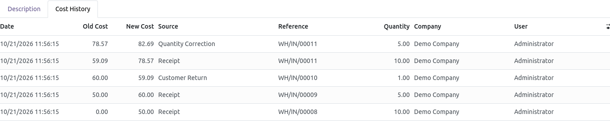
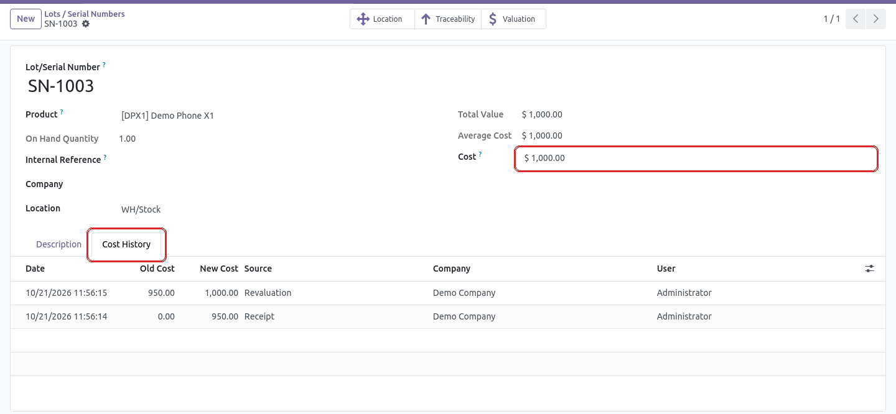
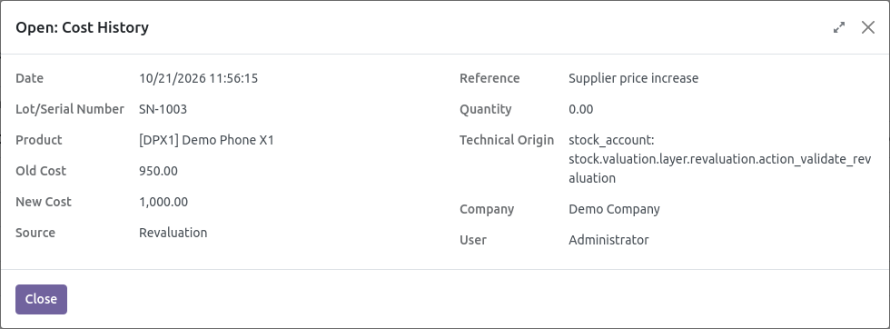
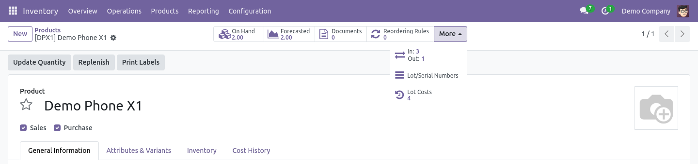
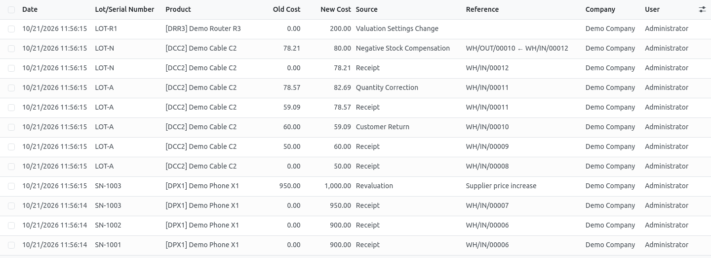
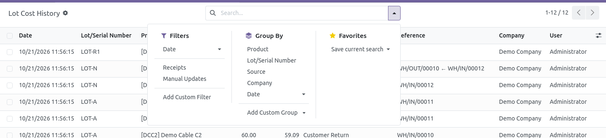
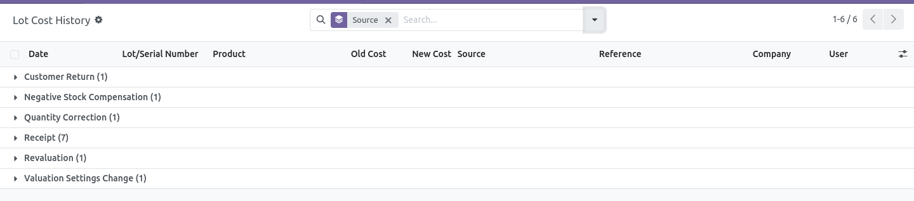
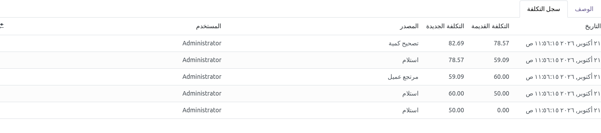

Odoo 18 can value the stock by lot / serial number: each lot keeps its own cost, updated by its receipts, returns, corrections, revaluations and manual updates. But Odoo keeps no history of these changes: the cost of a serial number on a past date, and the operation that changed it, can no longer be found.
Lot Cost History records every change of the cost of a lot, at the moment it happens, for each company, with its source, its reference and its quantity.
bk_product_cost_history): it is
installed automatically with this module.Costing methods
bk_lot_cost_history and bk_product_cost_history to
your addons path and restart the Odoo server (Odoo.sh: add them to your repository).The history is shown to three kinds of users:
To add a user to this group:
The same group also gives access to the product cost history of the free module. The Inventory › Reporting menu is shown by Odoo to the Inventory Administrators only: the other users of the group open the history from the product button and the lot tab (see below).
Inventory › Products › Lots/Serial Numbers, open a lot, tab Cost History. The current cost of the lot is the Cost field of the form; the tab shows how it got there, the newest change first. The tab is shown once the lot has at least one line.

The Reference, the Quantity and the Technical Origin (administrators only) are optional columns: click the settings icon at the right of the column titles to show them.

Click a line to see all its details in a read-only window.
On a product valued by lot, the Lot Costs button shows the number of history lines of its lots and opens them. When the form has many buttons, Odoo puts it under More.

Inventory › Reporting › Lot Cost History lists all the changes of all the lots.

Open the search options to:

Grouped by source, for example, the report shows how many changes each source made; open a group to see its lines.

To export the lines to Excel, select them (tick the box at the top left of the list), then Actions › Export.
The history of the lot LOT-A above, read from the oldest line (bottom) to the newest (top):
| Source | Old → New | Qty | What happened |
|---|---|---|---|
| Receipt | 0.00 → 50.00 | 10 | First receipt of the lot: 10 units at 50. The first line always starts from zero. |
| Receipt | 50.00 → 60.00 | 5 | 5 units were delivered, then 5 more were received at 70: (5 × 50 + 5 × 70) / 10 = 60. The delivery itself does not change the cost of the lot, so it has no line. |
| Customer Return | 60.00 → 59.09 | 1 | 1 unit came back at its delivery cost (50): (10 × 60 + 1 × 50) / 11 = 59.09. |
| Receipt | 59.09 → 78.57 | 10 | 10 units received at 100: (11 × 59.09 + 10 × 100) / 21 = 78.57. |
| Quantity Correction | 78.57 → 82.69 | 5 | The done quantity of the same receipt was changed from 10 to 15: 5 more units at 100. |
| Source | When | Reference |
|---|---|---|
| Receipt | A receipt (or an inventory adjustment) of the lot updates its average cost | Receipt |
| Customer Return | A returned lot comes back at its delivery cost | Return |
| Quantity Correction | The done quantity of a validated receipt is changed | Receipt |
| Negative Stock Compensation | A receipt revalues a lot delivered before it was received | Deliveries ← Receipt |
| Manual Update | The Cost field of the lot is changed | — |
| Import | The cost of the lot is imported | — |
| Product Cost Update | The cost of the product is changed: Odoo writes it on all its lots | — |
| Revaluation | The stock valuation of the lot or of the product is adjusted with the Odoo revaluation wizard | Reason of the revaluation |
| Valuation Settings Change | The valuation by lot is enabled on a product: its lots get the product cost | — |
| Opening Cost | The cost on the install date | — |
| Other | Any other change, e.g. landed costs or a vendor bill price difference (see the technical origin) | — |
stock_landed_costs, purchase_stock): they are logged
with the source Other, and the Technical Origin column shows the module that changed the cost.
I do not see the Cost History tab on a lot.
Check that the product is valued by lot (configuration step 3), that your user has the access
(step 4), and that the lot has at least one history line (the tab is hidden while it is empty).
I do not see the Lot Costs button on the product.
It is only shown on products valued by lot, and it may be under the More button.
I do not see the Lot Cost History menu.
Odoo shows the Inventory Reporting menu to the Inventory Administrators only. The other users open the
history from the product button or the lot tab.
Why does the first line of a lot start from 0?
When a lot is created, Odoo gives it the cost of the product until its receipt sets its real cost.
This temporary cost is not a real cost of the lot, so the history starts from zero with the real cost.
A delivery has no line, is it normal?
Yes: delivering a lot does not change its cost, only the received operations, the corrections and
the updates do.
Does it slow down the receipts?
No: about two database queries per serial number, less than one second more for a receipt of 1,000 serial numbers.
Questions, issues or suggestions: al7ajhashim@gmail.com